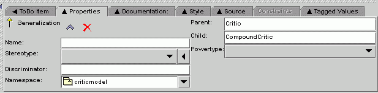

Argo's Details Pane allows you to edit the details of the currently selected design element or "to do" item. The ToDoItem tab has an westward arrowhead to indicate that it shows details of objects selected in the "To Do" Pane. Most of the other tabs have north facing arrowheads to indicate that they show details of objects selected in the diagram or navigation pane. The History tab has no arrowhead, it is located in the Details Pane for easy access but does not depend on what is selected in other panes.
You can make the Details Pane larger by dragging on the dividers. Also, you can "tear off" any tab pane by double clicking on it's tab. This makes copy of the tab pane in a new window that starts off at the same size but can be moved or made larger. Tab panes that are "torn off" are not updated when the selection changes, this allows you to look at the properties of two design elements at the same time.
Click in the image above to learn more about the tabs labeled ToDoItem, Properties, Javadocs, Source, Constraints, and TaggedValues Checklists and History are not available in the current version of ArgoUML.